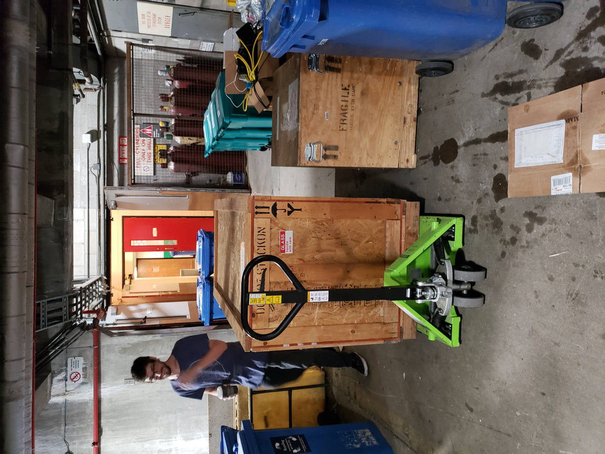
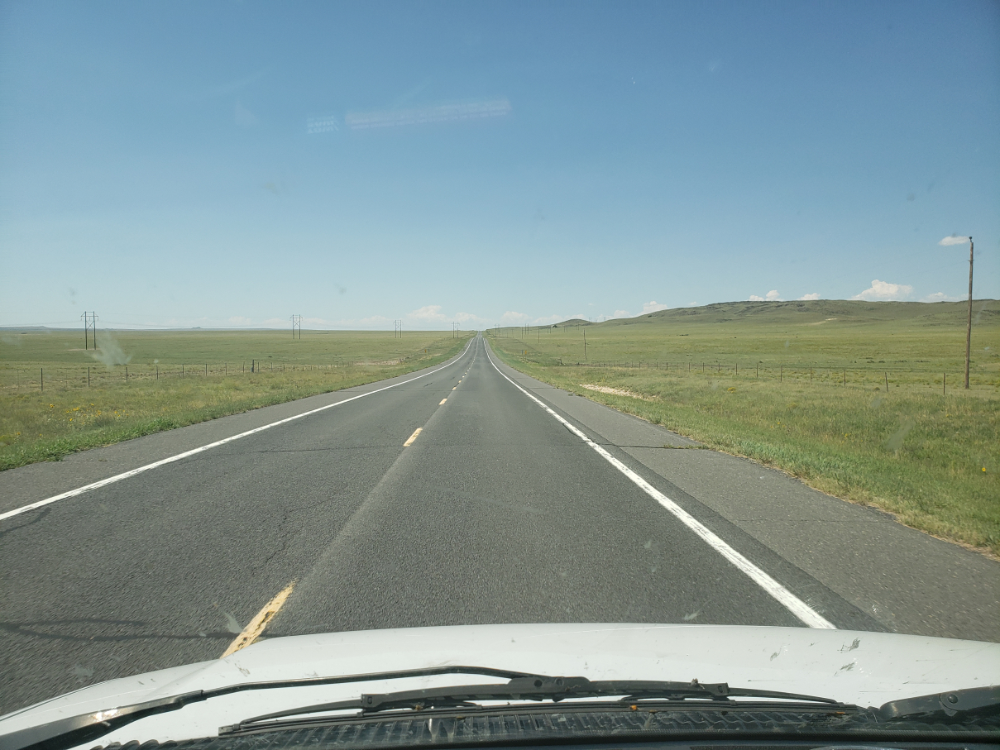
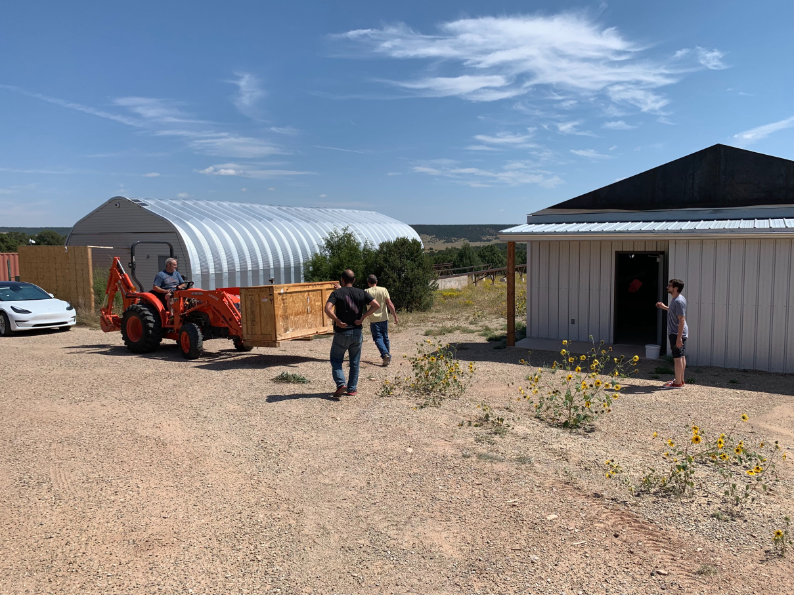
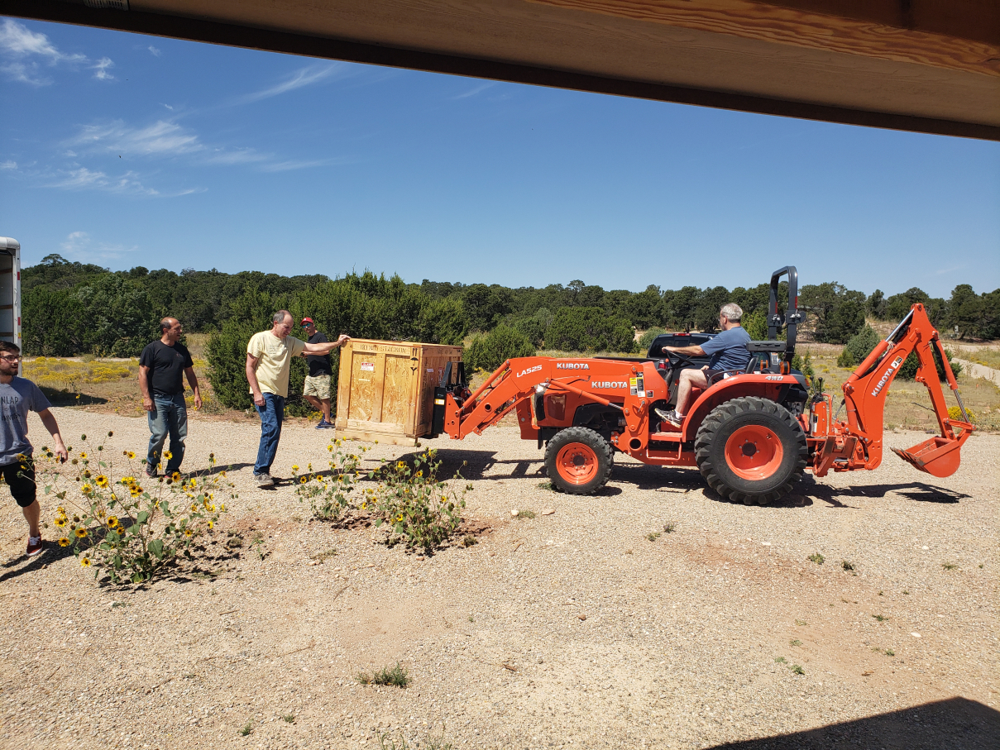
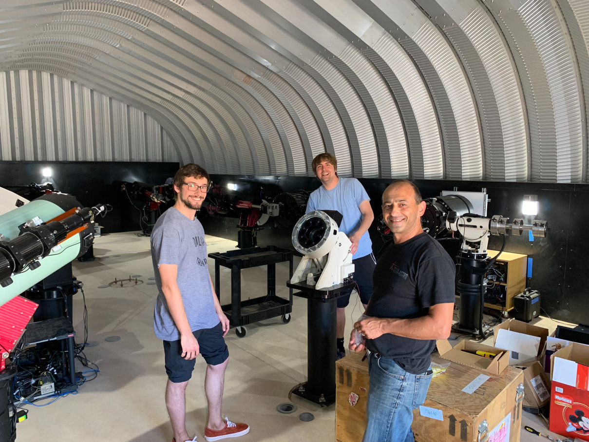
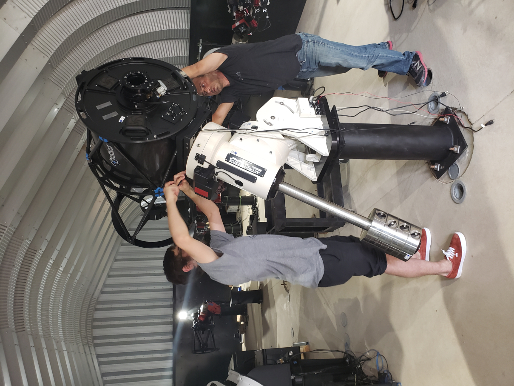
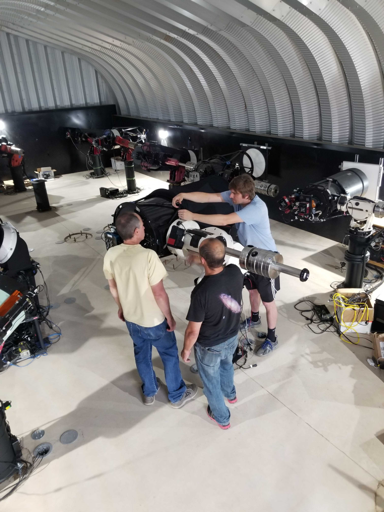

On our way, driving through Kansas.

Arriving at Deep Sky West.

The telescope comes off the truck.

Setting up the mount.

Optical tube going up.

September 2019 · Deep Sky West
The original installation trip, preserved from the first One Hit Wonders site: Toronto to New Mexico, then from boxes to first light.






